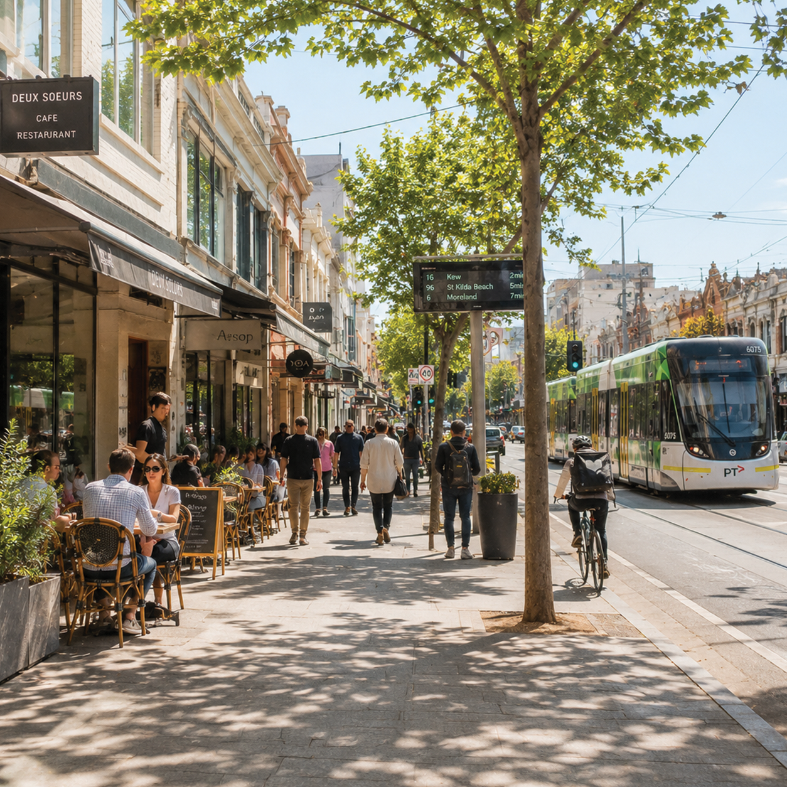

+3
The suburban main street stretches outward, lined with cafés, shops, and transport routes that feel familiar in form but radically different in function compared to 1977. Overhead and underground, dense networks of fibre-optic cables and power lines carry continuous streams of data, replacing what was once a far more limited communication infrastructure. Trams glide along shared roads, now tracked in real time through mobile apps and integrated transport systems that constantly optimise flow and arrival times. Compared to 1977, where streets were primarily physical spaces of movement and local trade, this environment is now layered with invisible systems—GPS navigation, live traffic algorithms, surveillance cameras, and delivery logistics routes—turning the street into both a physical corridor and a constantly computed network of movement and information.